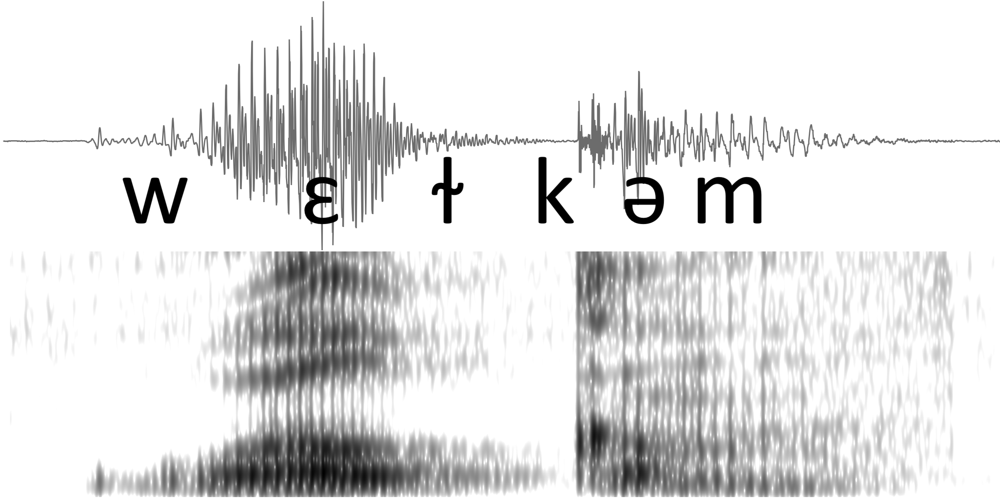

Introduction to Phonology and Phonetics
LASC11031 ~ Semester 1, 2024 ~ Jeremy Steffman

📋 Logistics
Lectures and workshops
This course meets for two hours each week. This two-hour interval will be divided into lecture and a more hands-on workshop component. In the workshop we will work together through a practical aspect of phonetics and phonology research.
- There will usually be about 1 hour for lecture and 1 hour for workshop, though this may vary from week to week.
Place and time: Fridays 15:10 - 17:00, Teaching Room 13 (01M.473) - Doorway 3 - Medical School, Teviot.
Office hours
By appointment using this booking link.
Place and time: Thursdays in the window of of 10:00 -12:00, 2.13 Dugald Stewart Building.
🔖 Assessment: Portfolio ~ due 9 December 2024, 12:00 Noon
The final assessment will be released to you at the end of week 5. It is an accumulated portfolio that you are encouraged to build throughout the latter half of the semester. The idea is that you can incrementally build and complete most of your portfolio before the end of week 10. There are some bits covered in the final two lectures which you will have to wait to complete, but all other components can be completed by week 8.
- The assessment is submitted electronically on a portal on Learn, which will appear on the course page.
📚 Readings and weekly exercises
You are expected to complete weekly readings which will reinforce concepts from Lecture. The text books we will read from are below. Both are available to you online through the library and there are some physical copies which can be checked out.
Ladefoged, Peter, and Keith Johnson. A Course in Phonetics. Seventh edition. Australia: Cengage Learning, 2015.
Zsiga, Elizabeth C. The Sounds of Language : An Introduction to Phonetics and Phonology. Chichester, West Sussex: Wiley-Blackwell, 2013.
✅ Your weekly tasks
Attend lecture and work on the workshop for the week.
- Complete the workshop materials, if not finished within the lecture time frame.
Complete all readings for the week - these will generally reinforce what has been covered in lecture, and will in some cases go a bit beyond the lecture content.
- You can finish the readings for a week anytime before the next week’s lecture.
Complete additional practice exercises and explore additional resources which will be posted as weekly resources on each week’s section on Learn. These will be short and are intended to get you engaging more actively with the lecture material.
Week 5 onward: spend some time working on the portfolio assessment, suggested time is 2 hours per week.
📆 Timetable
Abbreviations: ACiP = A Course in Phonetics; TSoL = The Sounds of Language
| Week | Topics covered | Workshop activity | Reading(s) |
|---|---|---|---|
| 1-20 Sept | Speech production 1: Airstream mechanisms, the IPA. |
Praat basics | ACiP Ch 1 and Ch 2 |
| 2-27 Sept | Speech production 2: Consonants, place and manner of articulation, IPA contd. |
Text Grids | ACiP Ch 3, Ch 7 |
| 3-4 Oct | Speech production 3: Vowels, IPA contd. |
IPA transcription | ACiP Ch4, TSol Ch 4 |
| 4-11 Oct | Speech acoustics 1: Basic acoustics and vowels |
Measuring F0, formants Acoustic representations ‘Spectrogram reading’ I |
TSoL Ch 6 and Ch 7 |
| 5-18 Oct | Speech acoustics 2: consonants portfolio assessment posted |
Measuring VOT ‘Spectrogram reading’ II |
ACiP Ch 7 and Ch 6 Optional advanced acoustics reading: TSoL Ch 8 |
| 6-25 Oct | [REVISION WEEK; no lecture] | Suggested: begin work on portfolio assessment | [none!] |
| 7-1 Nov | Stress, tone, and voice quality | ‘Spectrogram reading’ III | ACiP Ch 10 Optional advanced tone reading: TSoL Ch 17 |
| 8-8 Nov | Connected speech and phrasal prosody | Acoustic segmentation ‘Spectrogram reading’ IV |
ACiP Ch 11 |
| 9-15 Nov | Phonology 1: phonemes and allophones |
Phonology problem set 1 | TSoL Ch 10 and 11 |
| 10-22 Nov | Phonology 2: natural classes and features |
Phonology problem set 2 | TSoL Ch 12 and 13 |
| 11-29 Nov | Final assessment questions/help Spectrogram reading practice [no new content] |
‘Spectrogram reading’ V | [none!] |